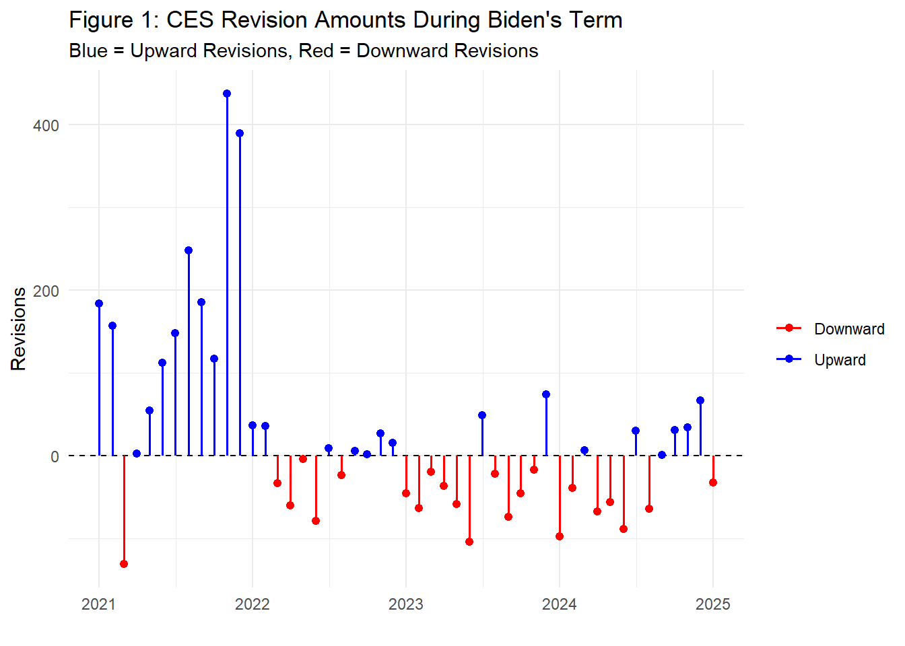
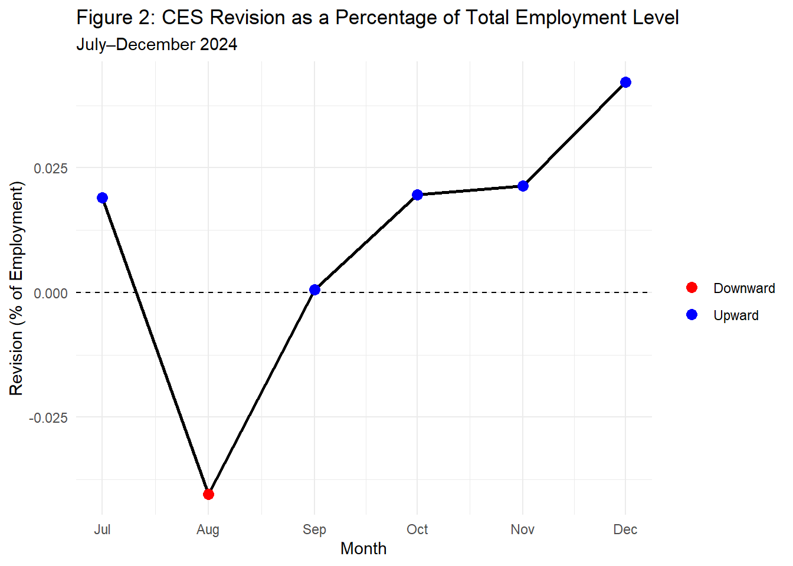
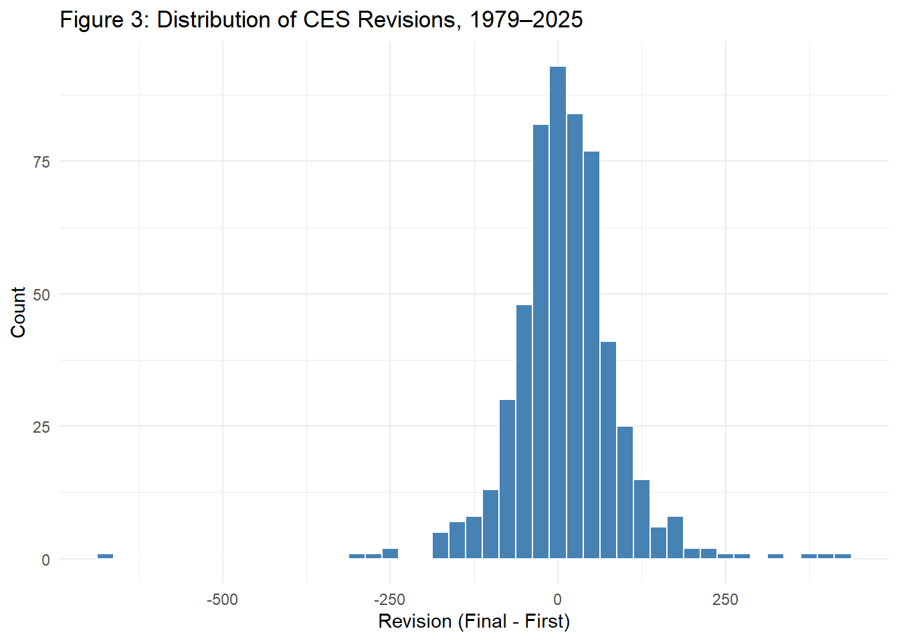
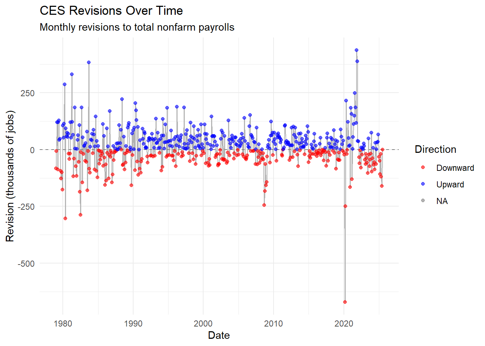

Investigating CES Revision Claims Using Statistical Analysis
Author
Sojung Chu
Published
December 7, 2025
Politico Pants on Fire Meter
Executive Summary
This report analyzes the recent patterns in the Bureau of Labor Statistics’ (BLS) Current Employment Statistics (CES) estimates and revisions to fact check commentator claims about CES revisions. The analysis is broken down into five parts:
Accessing BLS CES records
CES revisions
Exploratory data analysis (EDA)
Statistical tests
Fact checks for two claims
Background
As the head of the Bureau of Labor Statistics, Dr. McEntarfer had responsibility for all of the BLS’s statistical programs and reporting, including the closely watched CES, colloquially known as the “jobs number.” On August 1st, 2025, President Donald Trump announced in a post on Truth Social his intentions to fire Dr. Erika McEntarfer, the Commissioner of Labor Statistics, citing concerns over the size and direction of recent CES revisions. Supporters of BLS and Dr. McEntarer concede that BLS and CES face non-trivial challenges but deny any political valence to these challenges.
Problem Description
While President Trump has claimed rationale for firing Dr. McEntarfer, more investigation is needed to find out whether the data supports, refutes, or is only partially consistent with the claim.
In response to this issue, the veracity of competing assertions concerning the accuracy of BLS reporting was examined through two fact-checking analyses of recent CES estimation and revision patterns. This report documents the analytical approach used and presents the findings from both fact checks, one pertaining to a left-leaning news organization and the other to a right-leaning counterpart.
Data Acquisition
Two separate data sources are required: the (final) CES estimates of the total employment level of the United States and the cycle-to-cycle revisions of the CES estimate.
Note: For the purpose of this study, the focus is exclusively on seasonally-adjustedtotal non-farm payroll as it is the most politically salient number that CES reports.
To begin with, all the library packages required for the project were loaded in.
Code
# Loads all required libraries for this projectlibrary(tidyverse)library(glue)library(httr2)library(rvest)library(lubridate)library(readr)library(stringr)library(dplyr)library(purrr)library(tibble)library(knitr)library(kableExtra)library(scales)library(infer)library(DT)
Final CES Estimates
For the Final CES Estimates, they were accessed through BLS Data Finder 1.1. To do this, a function replicates the BLS web form’s HTTP request to download CES Total Nonfarm Payroll (seasonally adjusted) data from 1979 to 2025 directly from the HTML endpoint using httr2. To then extract the appropriate HTML table and convert it into an R data frame for further analysis, rvest was used.
Code
# Creates a storage directory for downloaded BLS data (if it does not already exist),# ensuring that all CES datasets used in the analysis are saved in a consistent location.if(!dir.exists("data/mp04")){dir.create("data/mp04", showWarnings =FALSE, recursive =TRUE)}# Retrieves historical CES Total Nonfarm Payroll (SA) data directly from the BLS HTML endpoint.# Replicates the parameters of the BLS web form to systematically pull the full time series# (starting in 1979) for use in accuracy checks and revision analyses.get_ces_total_nonfarm <-function(start_year =1979, end_year =2025){ bls_url <-"https://data.bls.gov/pdq/SurveyOutputServlet" resp <-request(bls_url) |># Submits the same POST request the BLS portal uses to generate its published table.req_method("POST") |>req_body_form(request_action ="get_data",reformat ="true",from_results_page ="true",from_year =1979,to_year =2025,initial_request ="false",data_tool ="surveymost",series_id ="CES0000000001",original_annualAveragesRequested ="false" ) |>req_perform()# Ensures that the request to the BLS server succeeds before proceeding.stopifnot(resp_status(resp) ==200)# Reads the HTML response and extracts the published CES table as an R data frame,# making it ready for downstream calculations and fact-checking. html <-resp_body_html(resp) tables <- html |>html_elements("table") raw_tbl <- tables[[2]] |>html_table()}
Then, the raw BLS table was pivoted into an appropriate format with date and level as the header columns before modifying the column types. The date field was constructed from the year and month values, and both fields were converted to their proper numeric forms. Non-data rows were removed, and the series was sorted to create a clean, monthly time series.
Code
raw_tbl <-get_ces_total_nonfarm()ces_clean <- raw_tbl |># Pivots the table from a wide format (one row per year) to a long format# with one row per year–month combination.pivot_longer(cols = Jan:Dec,names_to ="month",values_to ="level" ) |># Creates a proper date variable and converts key columns to numeric types# to make the series usable for time-series analysis.mutate(# Creates a year–month date and converts it to a Date object.date =ym(paste(Year, month)), # Converts the year to integer and the employment level to numeric.Year =as.integer(Year),level =as.numeric(level) ) |># Keeps only the variables needed for downstream analysis.select(date, level) |># Removes rows that failed to convert cleanly to numericdrop_na() |># Orders the observations chronologically by date.arrange(date)
CES Revisions Data
A separate function, was used to pull the monthly revision table for a given year from the BLS CES revisions page. This function does a HTML request, locates the specific table whose caption matched the target year, and extracts all rows. The code then kept only rows corresponding to calendar months and mapped the relevant columns into a tidy tibble with date, original (first estimate), final (third estimate), and revision (final minus original).
Code
get_ces_revisions_year <-function(year) {# Requests the CES revisions page with a browser-like user agent to ensure access. resp <-request("https://www.bls.gov") |>req_url_path("web", "empsit", "cesnaicsrev.htm") |>req_headers(`User-Agent`="Mozilla/5.0 (Macintosh; Intel Mac OS X 10.15; rv:143.0) Gecko/20100101 Firefox/143.0" ) |>req_retry(max_tries =5) |>req_perform() page <- resp |>resp_body_html()# Identifies the revision table whose caption matches the specified year. tables <- page |>html_elements("table") captions <- tables |>map_chr(~ .x |>html_element("caption") |>html_text2()) idx <-which(str_detect( captions,paste0("Nonfarm Payroll Employment: Revisions between over-the-month estimates, ", year) ))if (length(idx) ==0) {stop("No table found for year ", year, call. =FALSE) }if (length(idx) >1) {warning("More than one table matched year ", year, "; using the first.") idx <- idx[1] } tbl_node <- tables[[idx]]# Extracts the table as-is, keeping all rows for filtering. raw_tbl <- tbl_node |>html_table(header =FALSE, fill =TRUE) |>as_tibble()# Keeps only rows where the first column contains a month name. month_labels <-c("Jan.", "Feb.", "Mar.", "Apr.", "May","Jun.", "Jul.", "Aug.", "Sep.", "Oct.", "Nov.", "Dec." ) month_col <- raw_tbl[[1]] |>as.character() |>str_squish() is_month_row <- month_col %in% month_labels data_tbl <- raw_tbl[is_month_row, ]# Builds the final data set using fixed column positions for month, year,# the first estimate, the third estimate, and the resulting revision. month_chr <-str_remove(as.character(data_tbl[[1]]), "\\.$") year_chr <-as.character(data_tbl[[2]])tibble(date =ym(paste(year_chr, month_chr)),original =as.numeric(data_tbl[[3]]),final =as.numeric(data_tbl[[5]]),revision =as.numeric(data_tbl[[8]]) ) }
Next, the map function was used to retrieve the revisions for each year from 1979 to 2025 and collect the results. Then I used purrr::list_rbind() to combine the yearly outputs into a single data frame.
Code
get_ces_revisions_all <-function(start_year =1979, end_year =2025) { years <-seq(start_year, end_year)# Retrieves the revision table for each year in the sequence. year_list <- purrr::map(years, get_ces_revisions_year)# Combines all yearly tables into one unified data set. all_years <- purrr::list_rbind(year_list)# Keeps unique dates and restricts the series to the required range. all_years |>distinct(date, .keep_all =TRUE) |>filter( date >=as.Date("1979-01-01"), date <=as.Date("2025-07-01") )}ces_all <-get_ces_revisions_all()
Data Integration and Exploration
Table Joining
Before beginning any analysis, the two previously extracted tables needed to be joined together. An inner join was used to match by date.
Code
# Merges the CES levels with the revision data by matching on the date.ces_merged <- ces_clean |>inner_join(ces_all, by ="date")
CES Revision Magnitude Inside vs Outside Biden’s Term
I computed the relative size of each CES revision by dividing the absolute revision by the finalized employment level. This standardizes revisions across decades, making early and recent data comparable despite substantial growth in total employment.
Code
# Computes relative revision size and shows months within Biden's term.ces_biden <- ces_merged |>mutate(# Computes the absolute revision as a share of the final level.rel_rev =abs(revision) / level,# Flags months that fall within Biden's term.in_biden_term = date >=as.Date("2021-01-01") & date <=as.Date("2025-01-31") )# Summarizes the distribution of relative revisions inside vs. outside Biden's term.ces_biden_summary <- ces_biden |>group_by(in_biden_term) |>summarise(mean_rel_rev =mean(rel_rev, na.rm =TRUE),median_rel_rev =median(rel_rev, na.rm =TRUE),sd_rel_rev =sd(rel_rev, na.rm =TRUE),n =n(),.groups ="drop" ) |>mutate(Term =if_else(in_biden_term, "During Biden", "Outside Biden") ) |>select( Term,Mean = mean_rel_rev,Median = median_rel_rev,SD = sd_rel_rev,`Number of months`= n )caption_text <-"Table 1: Distribution of Relative Revisions"# Creates a tableces_biden_summary |>kable(digits =c(0, 10, 10, 10, 0), caption = caption_text,align =c("l", "l", "l", "l", "l") ) |>kable_styling(full_width =FALSE,position ="center" ) |>row_spec(0,align ="c" )
Table 1: Distribution of Relative Revisions
Term
Mean
Median
SD
Number of months
Outside Biden
0.0004799888
0.0003234824
0.0005448301
510
During Biden
0.0005034368
0.0003140643
0.0005977057
49
Proportion of Downward Revisions During Biden’s Term
In addition to examining the size of revisions, I calculated the proportion of downward versus upward revisions during Biden’s term. This provides insight into the directional bias of the revisions, whether the initial employment estimates were generally too high or too low, based on counts.
Code
# Calculates the share of upward vs. downward revisions during Biden's term.biden_counts_long <- ces_biden |># Finds downward revisions.mutate(down = revision <0) |># Restricts the sample to months in Biden's term.filter(in_biden_term) |># Counts total, downward, and upward revisions.summarise(n_total =n(),n_down =sum(down),n_up = n_total - n_down ) |># Reshapes counts into a long format by revision direction.pivot_longer(cols =c(n_down, n_up),names_to ="direction",values_to ="n" ) |># Labels directions and proportions.mutate(direction =recode(direction,n_down ="Downward",n_up ="Upward"),prop = n / n_total )caption_text_2 <-"Table 2: Direction of Revisions During Biden's Term"# Creates a table for up vs. down revisions (Table 2)biden_counts_long |>select(`Revision Direction`= direction,`Number of Months`= n,`Proportion of Revisions`= prop ) |>kable(digits =c(0, 0, 4), caption = caption_text_2,align =c("l", "l", "l") ) |>kable_styling(full_width =FALSE,position ="center" ) |>row_spec(0,align ="c" )
Table 2: Direction of Revisions During Biden's Term
Revision Direction
Number of Months
Proportion of Revisions
Downward
23
0.4694
Upward
26
0.5306
I then looked at the count for the last six months of Biden’s Term from July-December in 2024.
Code
jul_dec_2024 <- ces_biden |># Checks whether each revision is downward or upward.mutate(down = revision <0,up = revision >0 ) |># Restricts the sample to July–December 2024.filter(date >=as.Date("2024-07-01"), date <=as.Date("2024-12-31")) |># Counts months and computes the share of upward vs. downward revisions.summarise(n_months =n(),n_down =sum(down),n_up =sum(up),prop_down = n_down / n_months,prop_up = n_up / n_months )# Puts July–December 2024 counts into a long format by revision direction.jul_dec_2024_long <- jul_dec_2024 |>summarise(`Revision Direction`=c("Downward", "Upward"),`Number of Months`=c(n_down, n_up),`Proportion of Revisions`=c(prop_down, prop_up) )# Creates a tablecaption_text_3 <-"Table 3: Direction of Revisions, July–December 2024"jul_dec_2024_long |>kable(digits =c(0, 0, 4),caption = caption_text_3,align =c("l", "l", "l") ) |>kable_styling(full_width =FALSE,position ="center" ) |>row_spec(0,align ="c" )
Table 3: Direction of Revisions, July–December 2024
Revision Direction
Number of Months
Proportion of Revisions
Downward
1
0.1667
Upward
5
0.8333
Month-by-Month Revisions Visualization of Biden’s Term
I next visualized the month-by-month revisions during Biden’s term. For each employment report, I plotted a vertical line from zero to the size of the revision, coloring upward revisions in blue and downward revisions in red. This “lollipop” plot makes it easy to see not only the sign of each revision, but also how their magnitude and frequency evolve over time, highlighting periods with unusually large adjustments to the initial CES estimates. This code creates the plot in an object, but will not print since it will be used later on in the project.
Code
ces_biden_plot <- ces_biden |># Restricts the sample to months during Biden's term.filter(in_biden_term) |># Labels each revision by direction based on its sign.mutate(direction =if_else(revision >=0, "Upward", "Downward")) |>ggplot(aes(x = date, y = revision, color = direction)) +# Draws a horizontal zero line to distinguish upward from downward revisions.geom_hline(yintercept =0, linetype ="dashed") +# Plots a vertical line for each month showing the size and sign of the revision.geom_segment(aes(x = date, xend = date, y =0, yend = revision),linewidth =0.7) +# Adds a point at the tip of each line to emphasize the exact revision value.geom_point(size =1.8) +# Colors upward revisions blue and downward revisions red.scale_color_manual(values =c("Upward"="blue", "Downward"="red") ) +labs(title ="Figure 1: CES Revision Amounts During Biden's Term",subtitle ="Blue = Upward Revisions, Red = Downward Revisions",x ="",y ="Revisions",color ="" ) +theme_minimal()
Last Six-Month Revisions Visualization of Biden’s Term
To put these late-2024 revisions in perspective, I plotted each month’s CES revision as a share of the total employment level. For July through December 2024, I connected the monthly values with a line and use colored points (blue for upward revisions and red for downward revisions) to indicate the direction of each adjustment. This code also creates the plot in an object, but will not print since it will be used later on in the project.
Code
rev_pct_plot <- ces_biden |># Restricts the sample to July–December 2024.filter(date >=as.Date("2024-07-01"), date <=as.Date("2024-12-31")) |># Expresses each revision as a percentage of the employment level# and labels its direction based on the sign.mutate(pct_rev = (revision / level) *100,direction =if_else(pct_rev >=0, "Upward", "Downward") ) |>ggplot(aes(x = date, y = pct_rev)) +# Draws a horizontal zero line to separate upward from downward revisions.geom_hline(yintercept =0, linetype ="dashed") +# Connects monthly revisions with a single line to show their time pattern.geom_line(aes(group =1), linewidth =1) +# single connected line# Shows each monthly revision as a colored point, by direction.geom_point(aes(color = direction), size =3) +# colors only on points# Colors upward revisions blue and downward revisions red.scale_color_manual(values =c("Upward"="blue", "Downward"="red") ) +labs(title ="Figure 2: CES Revision as a Percentage of Total Employment Level",subtitle ="July–December 2024",x ="Month",y ="Revision (% of Employment)",color ="" ) +# Applies a minimal theme.theme_minimal()
Number of Downward Revisions During Trump’s First Term
I summarized the direction of CES revisions during Donald Trump’s first term. This code restricts the data to January 2017 through January 2021, flags whether each monthly revision is upward or downward, and then counts how many months fall into each category. It also computes the share of months with downward and upward revisions and reshapes the results into a simple table format. The finished table reports the number and proportion of downward versus upward revisions during Trump’s first term.
Code
# Summarizes revision direction during Trump's first term.trump_2017_2021 <- ces_merged |># Restricts the sample to Trump's first term (Jan 2017–Jan 2021).filter(date >=as.Date("2017-01-01"), date <as.Date("2021-01-20")) |># Flags whether each revision is downward or upward.mutate(down = revision <0,up = revision >0 ) |># Counts months and computes the share of upward vs. downward revisions.summarise(n_months =n(),n_down =sum(down),n_up =sum(up),prop_down = n_down / n_months,prop_up = n_up / n_months )# Puts Trump's counts into a long format by revision direction.trump_long <- trump_2017_2021 |>summarise(`Revision Direction`=c("Downward", "Upward"),`Number of Months`=c(n_down, n_up),`Proportion of Revisions`=c(prop_down, prop_up) )# Creates a table of upward vs. downward revisions during Trump's first term.caption_text_trump <-"Table 4: Direction of Revisions During Trump's First Term"trump_long |>kable(digits =c(0, 0, 4),caption = caption_text_trump,align =c("l", "l", "l") ) |>kable_styling(full_width =FALSE,position ="center" ) |># Centers the column titles.row_spec(0,align ="c" )
Table 4: Direction of Revisions During Trump's First Term
Revision Direction
Number of Months
Proportion of Revisions
Downward
24
0.4898
Upward
25
0.5102
Fraction of Negative CES Revisions Each Year
To examine how often CES revisions were negative in each calendar year, I constructed a yearly summary table of revision direction. For every year in the sample, the code records the total number of months, the number of months with downward revisions, and the resulting proportion of downward revisions. These summaries are then displayed in an interactive table, which is sorted by year in descending order and limited to five rows per page for easier viewing.
Code
# Create yearly summary of downward revisions.downshare_by_year <- ces_merged |>mutate(Year =as.integer(format(date, "%Y")), # extract calendar yeardown = revision <0# indicator for downward revision ) |>group_by(Year) |>summarise(n_months =n(),n_down =sum(down),prop_down = n_down / n_months,.groups ="drop" )# Prepares a summary table of downward revision shares by year.downshare_by_year_tbl <- downshare_by_year |># Renames the count and proportion variables with clearer labels for display.mutate(`Number of Months`= n_months,`Number of Downward`= n_down,`Proportion Downward`=round(prop_down, 4) ) |># Keeps only the year and the labeled summary columns, in a clean order.select(`Year`,`Number of Months`,`Number of Downward`,`Proportion Downward` )# Displays an interactive table of yearly downward revision shares.datatable( downshare_by_year_tbl,caption ="Table X: Fraction of Negative CES Revisions by Year",rownames =FALSE, # Ensures Year is the first column, not row names.options =list(pageLength =5, # Shows 5 years per page.lengthChange =FALSE, # Hides the page-length dropdown.order =list(list(0, 'desc')) # Sorts by Year (column 0) in descending order. ))
CES Revision Summary by Administration
I summarized revision behavior by presidential administration. Each month in the sample is assigned to an administration (Pre-Trump, Trump, or Biden) based on its date, and I then compute, for each administration, the number of months with available data, the average revision, the median revision, and the proportion of months with downward revisions. Table 6 reports these administration-level summaries in a compact format, showing how typical revision size and the frequency of negative revisions vary across periods.
Code
# Summarizes CES revisions by presidential administration.eda_admin <- ces_merged |>mutate(# Ensures the revision variable is numeric for summary statistics.revision =as.numeric(revision),# Assigns each month to an administration based on the date.administration =case_when( date >=as.Date("2017-01-01") & date <as.Date("2021-01-20") ~"Trump", date >=as.Date("2021-01-20") & date <=as.Date("2025-01-31") ~"Biden",TRUE~"Pre-Trump" ),# Flags whether each revision is downward.down = revision <0 ) |># Drops months with missing revision values.filter(!is.na(revision)) |># Aggregates statistics by administration.group_by(administration) |>summarise(n_months =n(),avg_revision =mean(revision, na.rm =TRUE),med_revision =median(revision, na.rm =TRUE),prop_down =mean(down, na.rm =TRUE) )caption_text_admin <-"Table 6: CES Revision Summary by Administration"# Formats the administration-level summary as a publication-ready table.eda_admin |>mutate(`Number of Months`= n_months,`Average Revisions`= avg_revision,`Median Revisions`= med_revision,`Proportion Downward`= prop_down ) |>select(Administration = administration,`Number of Months`,`Average Revisions`,`Median Revisions`,`Proportion Downward` ) |>kable(digits =c(0, 0, 1, 1, 3), # rounding for counts, averages, medians, and proportionscaption = caption_text_admin,align =c("l", "c", "c", "c", "c") ) |>kable_styling(full_width =FALSE,position ="center" ) |># Emphasizes and centers the header row.row_spec(0,bold =TRUE,align ="c" )
Table 6: CES Revision Summary by Administration
Administration
Number of Months
Average Revisions
Median Revisions
Proportion Downward
Biden
48
21.3
1.5
0.479
Pre-Trump
460
12.1
11.5
0.415
Trump
49
-6.9
2.0
0.490
Histogram of CES revisions pre-Biden
To visualize the overall behavior of CES revisions across the full historical period, I formed a histogram of all monthly revisions from 1979 through 2025. This figure displays how often different revision sizes occur and highlights the strong concentration of revisions around zero, with relatively few large adjustments in either direction.
Code
# Creates a histogram showing the overall distribution of CES revisions.ces_hist_plot <- ces_merged |>ggplot(aes(x = revision)) +# Histogram with a bin width of 25 for clearer grouping of revision sizes.geom_histogram(binwidth =25, fill ="steelblue", color ="white") +# Titles and axis labels for interpretability.labs(title ="Distribution of CES Revisions, 1979–2025",x ="Revision (Final - First)",y ="Count" ) +# Applies a clean minimal theme for publication-style graphics.theme_minimal()
Timeline of Revisions Pre-Biden
Stepping back from any single year or administration, this figure traces the month-by-month pattern of CES revisions across the full sample. Each dot represents a monthly revision, with blue points indicating upward revisions and red points indicating downward ones, while a thin grey line connects the observations over time. The dashed horizontal line at zero separates positive from negative revisions. This visualization highlights both the frequency and timing of upward versus downward adjustments, making it easier to see whether long stretches of the historical record are dominated by one direction of revisions.
Code
# Creates a time-series plot of CES revisions, colored by direction.ces_revisions_time_plot <- ces_merged |>mutate(# Labels each revision by whether it is downward or upward.direction =if_else(revision <0, "Downward", "Upward") ) |>ggplot(aes(x = date, y = revision)) +# Thin grey line to show the overall time pattern of revisions.geom_line(color ="grey70", linewidth =0.4) +# Horizontal zero line to separate upward from downward revisions.geom_hline(yintercept =0, linetype ="dashed", color ="grey50") +# Points colored by revision direction (downward vs. upward).geom_point(aes(color = direction), alpha =0.6, size =1.5) +# Manual color scale: red for downward, blue for upward revisions.scale_color_manual(values =c("Downward"="red", "Upward"="blue") ) +# Titles and axis labels.labs(title ="CES Revisions Over Time",subtitle ="Monthly revisions to total nonfarm payrolls",x ="Date",y ="Revision (thousands of jobs)",color ="Direction" ) +# Clean, minimal theme for readability.theme_minimal()
Statistical Inference
Is the proportion of downward revisions in the final months of Biden’s presidency greater than in the earlier periods?
Using the prop_test function, I performed a statistical test for this question. Note: Final months = July–December 2024. Earlier months = all prior Biden-term months.
# Checks whether each revision is a downward revision.ces_biden <- ces_biden |>mutate(down = revision <0)ces_biden <- ces_biden |># Defines two periods: the final months of Biden's term vs. earlier months.mutate(period =case_when( date >=as.Date("2024-07-01") & date <=as.Date("2024-12-31") ~"final", date >=as.Date("2021-01-01") & date <as.Date("2024-07-01") ~"earlier",TRUE~NA_character_ ) ) |># Keeps only observations that fall into one of the two periods.filter(!is.na(period))# Tests whether the share of downward revisions is higher in the final months# than in the earlier Biden-term months (one-sided test: p_final > p_earlier).prop_test( ces_biden, down ~ period,order =c("final", "earlier"),alternative ="greater")
A one-sided two-sample proportion test comparing the rate of downward revisions in July–December 2024 to earlier Biden-term months showed no statistical significance that downward revisions were more common in the final months with a p-value of 0.86.
Permutation Proportion Test
Due to the small sample size of the final period with very few downward revisions, the chi-squared approximation in the proportion test may be rough. Therefore, we instead also use the permutation approach.
Code
# Computes the observed difference in downward-revision rates# between the final months and earlier Biden-term months.obs_stat <- ces_biden |>specify(down ~ period, success ="TRUE") |>calculate(stat ="diff in props", order =c("final", "earlier"))# Builds a null distribution by permuting the period labels,# assuming no relationship between period and downward revisions.null_dist <- ces_biden |>specify(down ~ period, success ="TRUE") |>hypothesize(null ="independence") |>generate(reps =5000, type ="permute") |>calculate(stat ="diff in props", order =c("final", "earlier"))# Computes the one-sided p-value for the hypothesis that the# final period has a higher downward-revision rate than the earlier period.get_p_value(null_dist, obs_stat, direction ="greater")
# A tibble: 1 × 1
p_value
<dbl>
1 0.983
The permutation-based proportion test produced a p-value of 0.9838, so we fail to reject the null hypothesis that the rate of downward revisions in the final months was no greater than in the earlier Biden-term months. This very large p-value indicates that the data provide no statistical significant evidence supporting the claim of more downward revisions in the final period.
Were there abnormally more downward adjustment’s during Trump’s term previous to Biden?
Using the prop_test function, I performed a statistical test for this question.
# Creates an analysis dataset with a downward indicator and president labels.ces_pres <- ces_biden |>mutate(# Notes whether each revision is a downward revision.down = revision <0,# Assigns each month to Trump or Biden based on the release date.president =case_when( date >=as.Date("2017-01-01") & date <as.Date("2021-01-20") ~"Trump", date >=as.Date("2021-01-20") & date <=as.Date("2025-01-31") ~"Biden",TRUE~NA_character_ ) ) |># Keeps only observations that fall under Trump or Biden.filter(!is.na(president))# Tests whether the share of downward revisions is higher under Trump# than under Biden (one-sided test: p_Trump > p_Biden).ces_pres |>prop_test( down ~ president,order =c("Trump", "Biden"),alternative ="greater" )
A one-sided two-sample proportion test comparing the rate of downward revisions under Trump and Biden found no statistical evidence that downward revisions were more common during Trump’s term. The test produced a large p-value, indicating that the observed difference in downward-revision rates could easily arise from normal month-to-month variation rather than any systematic pattern tied to the administration in office.
Permutation Proportion Test
Again here the sample size is small, so I used a permutation approach.
Code
# Builds an analysis dataset with a downward indicator and president labels.ces_pres <- ces_biden |>mutate(# Flags whether each revision is a downward revision.down = revision <0,# Assigns each month to Trump or Biden based on its date.president =case_when( date >=as.Date("2017-01-01") & date <as.Date("2021-01-20") ~"Trump", date >=as.Date("2021-01-20") & date <=as.Date("2025-01-31") ~"Biden",TRUE~NA_character_ ) ) |># Keeps only observations that fall under Trump or Biden.filter(!is.na(president))# Computes the observed difference in downward-revision rates# between Trump and Biden (p_Trump - p_Biden).obs_stat <- ces_pres |>specify(down ~ president, success ="TRUE") |>calculate(stat ="diff in props", order =c("Trump", "Biden"))# Builds a null distribution by permuting the president labels,# assuming no relationship between president and downward revisions.null_dist <- ces_pres |>specify(down ~ president, success ="TRUE") |>hypothesize(null ="independence") |>generate(reps =5000, type ="permute") |>calculate(stat ="diff in props", order =c("Trump", "Biden"))# Computes the one-sided p-value for the hypothesis that the# Trump period has a higher downward-revision rate than the Biden period.get_p_value(null_dist, obs_stat, direction ="greater")
# A tibble: 1 × 1
p_value
<dbl>
1 1
Again, statistically, there is no evidence that Trump had more downward revisions than Biden with a p-value of 0.55.
I broadened the comparison to include all pre-Biden years rather than limiting the analysis to Trump’s first term and repeated the same proportion test using the expanded “Pre-Biden” category. This allowed assessment of whether downward revisions were unusually common at any point before 2021.
Code
# Creates a dataset with a binary downward/upward indicator# and a period variable (Biden vs. PreBiden).ces_pb <- ces_merged |>mutate(# Marks each revision as downward or upward.direction =if_else(revision <0, "down", "up"),# Labels whether the observation occurred during Biden's term or before it.period =if_else( date >=as.Date("2021-01-01") & date <=as.Date("2025-01-31"),"Biden","PreBiden" ) ) |># Removes any rows missing either variable.filter(!is.na(direction), !is.na(period))# (Optional sanity check of counts across groups.)ces_pb |>count(period, direction)
# A tibble: 4 × 3
period direction n
<chr> <chr> <int>
1 Biden down 23
2 Biden up 26
3 PreBiden down 215
4 PreBiden up 293
Code
# Computes the observed difference in downward-revision proportions# between the PreBiden period and the Biden period.obs_stat <- ces_pb |>specify(direction ~ period, success ="down") |>calculate(stat ="diff in props", order =c("PreBiden", "Biden"))# Generates a null distribution by permuting period labels, assuming# downward revisions are independent of whether the month is PreBiden or Biden.null_dist <- ces_pb |>specify(direction ~ period, success ="down") |>hypothesize(null ="independence") |>generate(reps =5000, type ="permute") |>calculate(stat ="diff in props", order =c("PreBiden", "Biden"))# Computes the one-sided p-value for whether downward revisions were# more common before Biden than during his term.get_p_value(null_dist, obs_stat, direction ="greater")
# A tibble: 1 × 1
p_value
<dbl>
1 0.784
A permutation-based two-sample proportion test comparing the pre-Biden era to the Biden administration produced a p-value of 0.78, indicating no evidence that downward CES revisions were more common before Biden than during his term. Given such a large p-value, the observed difference in downward-revision rates is entirely consistent with random variation, providing no support for the claim that downward revisions were unusually frequent prior to the Biden administration.
Fact Checks
I fact-checked one claim from a left-leaning source and one from a right-leaning source regarding BLS CES revisions and the dismissal of Dr. Erika McEntarfer.
CNBC
I evaluated a claim made by CNBC Anchor Brian Sullivan. The segment can be watched here.
Anchor Brian’s claim: The BLS CES revisions are not political because they were more revised down during the final months of the Biden Administration.
Politifact Fact-o-Meter Score: FALSE
Magnitude of Revisions
I computed the relative size of each CES revision by dividing the absolute revision by the finalized employment level. This standardizes revisions across decades, allowing early and recent data to be compared on the same footing despite large growth in payroll employment.
To visualize how these revisions evolved month by month during Biden’s term, Figure 1 plots the size and direction of each revision. The vertical “lollipop” lines show how far each initial estimate was revised up or down, with blue indicating upward revisions and red indicating downward ones.

Figure 1
Summary statistics show that the average and median relative revisions from 2021–2025 are nearly identical to historical norms. The median revision changed only marginally—from about 0.032% before 2021 to about 0.031% during Biden’s term—while the mean moved only a few thousandths of a percentage point (from 0.048% to 0.050%).
Direction of Revisions
I then examined the distribution of upward versus downward revisions during Biden’s term.
There were 49 CES reports from January 2021 through January 2025. Of these:
23 months (45.94%) saw downward revisions
26 months (53.06%) saw upward revisions
Figure 2 visualizes this breakdown and shows that upward and downward revisions occurred at typical frequencies for the CES series, with no unusual clustering in either direction.

Figure 2
This distribution shows that upward and downward revisions occurred at normal rates, with no unusual clustering in either direction. Downward revisions were not dominant during Biden’s term.
Late 2024: Were Biden’s Final Months Special?
Because the CNBC claim focuses on the “final months” of the Biden Administration, I looked closely at the period from July to December 2024. During these six months, downward revisions were relatively uncommon—only 16.7% of the reports showed a downward adjustment, while the majority were upward revisions 83.3%. These shares look very similar to the pattern from earlier in Biden’s term.
To check this more directly, I compared the final months to the rest of the Biden period using statistical tests. The results were straightforward: there is no evidence that downward revisions were more common at the end of 2024 than they were earlier in the administration. In fact, both tests produced extremely large p-values (0.86 and 0.98), meaning the pattern in the final months looks just like what we would expect by random chance.
Put simply, the data do not show any shift toward more downward revisions in Biden’s last months. The late-2024 revisions behaved just like the rest of the CES series during his term—and like the long-run historical pattern overall.
Fox News
I evaluated another claim made by Fox News Anchor Kevin Corke. The segment can be watched here.
Anchor Kevin’s claim: “There were all these revisions downward previous to the Biden Administration.” Based on the claim, we will see if there were abnormally more downward adjustment’s during Trump’s term previous to Biden.
Politifact Fact-o-Meter Score: FALSE
Downward Revisions During Trump’s First Term
During Donald Trump’s first term, from January 2017 through January 2021, there were 49 monthly CES reports. Of these:
24 months (49.0%) saw downward revisions
25 months (51.0%) saw upward revisions
These numbers fall well within typical historical ranges. Downward revisions were not unusually frequent during Trump’s term and occurred at rates similar to other modern periods.
Historical Context: Pre-Biden Years
To see whether downward revisions were concentrated before 2021, I examined annual shares of downward revisions going back to 1979. Some years have more downward adjustments than others, but the pattern fluctuates normally—there is no consistent buildup of negative revisions leading into the Biden administration.
I also compared revision behavior by administration. Whether looking at the Pre-Trump, Trump, or Biden periods, the proportion of downward revisions remains broadly similar. Trump’s term does not stand out as unusually negative compared to the long-run behavior of the CES revision process.

Figure 3
Complementing this, a histogram of all CES revisions from 1979–2025 shows a symmetric distribution centered near zero. Both upward and downward revisions are common, and neither direction dominates before 2021.

Figure 4
A full timeline of revisions tells the same story: red (downward) and blue (upward) points are interspersed across decades, without any sustained cluster of unusually negative adjustments in the pre-Biden era.
Were Downward Revisions Abnormally Common During Trump’s Term?
To evaluate the claim more formally, I compared the share of downward revisions under Trump with the share under Biden using a one-sided proportion test. The test returned a large p-value, indicating no evidence that downward revisions were more common during Trump’s term.
Because sample sizes for each administration are modest, I also used a permutation test. The result was the same: a large p-value (0.55) showing that the difference in downward-revision rates is fully consistent with random variation.
To check the broader claim that all pre-Biden years had more downward revisions, I repeated the test comparing the entire pre-2021 period with the Biden years. This produced another large p-value (0.78), demonstrating no evidence that downward revisions were more common before Biden in any historical sense.
Across Trump’s first term, the larger pre-Biden period, and the full historical record, downward CES revisions occur at normal rates and are balanced by upward adjustments. The data do not support the claim that downward revisions were unusually common prior to the Biden administration.
6. Conclusion
After checking both left and right wing media anchor’s claims, the data shows that both claims are unsupported. Revisions have followed a stable, historically typical pattern across administrations, and the dramatic interpretations offered by both anchors are not factual.